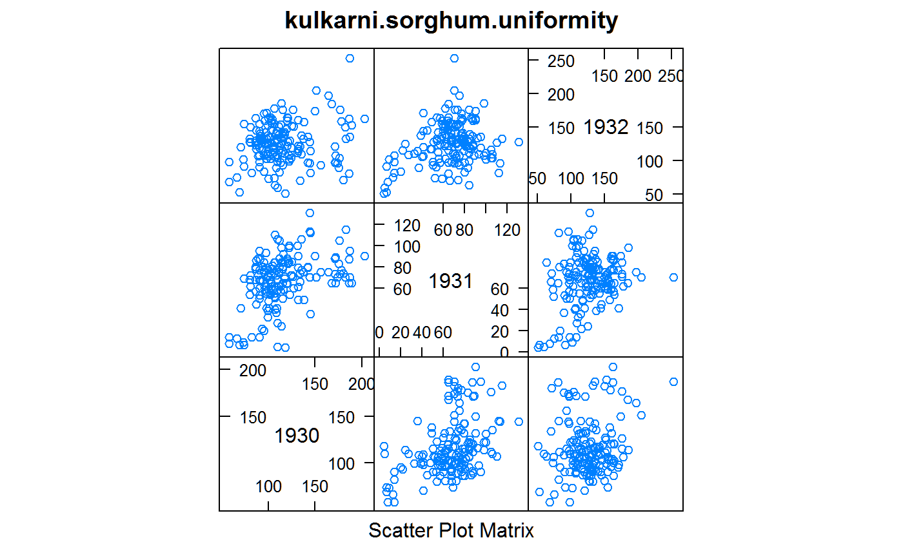
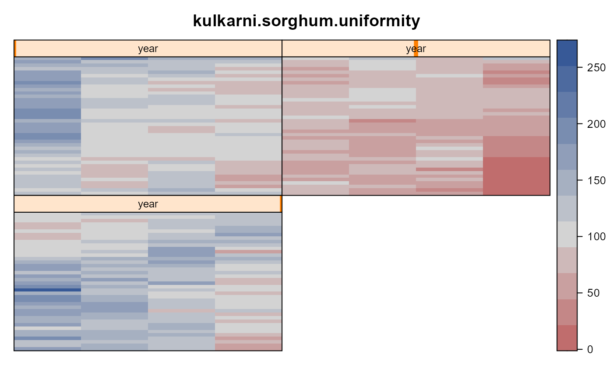

kulkarni.sorghum.uniformity.RdUniformity trial of sorghum in India, 3 years on the same plots 1930-1932.
data("kulkarni.sorghum.uniformity")
A data frame with 480 observations on the following 4 variables.
rowrow
colcolumn
yieldgrain yield, tolas per plot
yearyear
The experiment was conducted in the Sholapur district in India for three consecutive years in 1930-1932.
One acre of land (290 ft x 150 ft) was chosen in the midst of a bigger area (plot 13 on the Mohol Plot) for sowing to sorghum. It was harvested in plots of 1/160 acre (72 ft 6 in x 3 ft 9 in) each containing three rows of plants 15 in. apart. The 160 plots were arranged in forty rows of four columns, and the yields were measured in tolas. The plot division was kept intact for three years, and the yields of the 160 plots are available for three consecutive harvests. The original data are given in Appendix I.
Field width: 4 plots * 72.5 feet = 290 feet
Field length: 40 plots * 3.75 feet = 150 feet
Conclusions: "Thus, highly narrow strips of plots (length much greater than breadth) lead to greater precision than plots of same area but much wider and not so narrow."
Correlation of plots from year to years was low.
Kulkarni, R. K., Bose, S. S., and Mahalanobis, P. C. (1936). The influence of shape and size of plots on the effective precision of field experiments with sorghum. Indian J. Agric. Sci., 6, 460-474. Appendix 1, page 172. https://archive.org/details/in.ernet.dli.2015.271737
None.
library(agridat) data(kulkarni.sorghum.uniformity) dat <- kulkarni.sorghum.uniformity # match means on page 462 # tapply(dat$yield, dat$year, mean) # 1930 1931 1932 # 116.2875 67.2250 126.3688 libs(reshape2) libs(lattice) dmat <- acast(dat, row+col ~ year, value.var="yield") splom(dmat, main="kulkarni.sorghum.uniformity")cor(dmat)#> 1930 1931 1932 #> 1930 1.0000000 0.4192544 0.1683767 #> 1931 0.4192544 1.0000000 0.2665319 #> 1932 0.1683767 0.2665319 1.0000000libs(desplot) desplot(yield ~ col*row|year, dat, flip=TRUE, aspect=150/290, main="kulkarni.sorghum.uniformity")